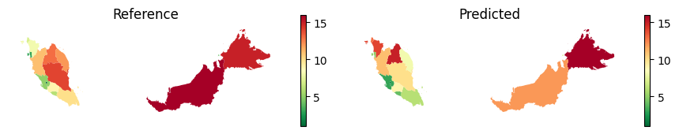

%matplotlib inline
%reload_ext autoreload
%autoreload 2Malaysia Evaluation
import sys
sys.path.append("../../../")
import os
from povertymapping import settings
from povertymapping.rollout_grids import get_region_filtered_bingtile_grids, compute_raster_stats
from povertymapping.hdx import get_hdx_file
from povertymapping.iso3 import get_iso3_code
from povertymapping.geoboundaries import get_geoboundaries
import geowrangler.vector_zonal_stats as vzs
import geopandas as gpd
import pandas as pd
import numpy as np
import matplotlib.pyplot as plt
from scipy.stats import spearmanrSet country-specific parameters
REGION = 'malaysia'
ADMIN_LVL = 'ADM2'
ZOOM_LEVEL = 14
GROUP_ZOOM_LEVEL = 8
country_code = get_iso3_code(REGION, code='alpha-2').lower()Read bounds
bounds_file = get_geoboundaries(region=REGION, adm='ADM1')
bounds_gdf = gpd.read_file(bounds_file)
bounds_gdf = bounds_gdf.sort_values('shapeName')bounds_gdf.sort_values('shapeName')#.explore()| shapeName | shapeISO | shapeID | shapeGroup | shapeType | geometry | |
|---|---|---|---|---|---|---|
| 1 | Johor | MY-01 | MYS-ADM1-3_0_0-B2 | MYS | ADM1 | MULTIPOLYGON (((104.06240 2.21794, 104.06217 2... |
| 11 | Kedah | MY-02 | MYS-ADM1-3_0_0-B12 | MYS | ADM1 | MULTIPOLYGON (((99.72140 6.20837, 99.72192 6.2... |
| 7 | Kelantan | MY-03 | MYS-ADM1-3_0_0-B8 | MYS | ADM1 | MULTIPOLYGON (((101.33398 4.69564, 101.33467 4... |
| 2 | Kuala Lumpur | MY-14 | MYS-ADM1-3_0_0-B3 | MYS | ADM1 | MULTIPOLYGON (((101.61508 3.15348, 101.61527 3... |
| 15 | Labuan | MY-15 | MYS-ADM1-3_0_0-B16 | MYS | ADM1 | MULTIPOLYGON (((115.13150 5.21699, 115.13119 5... |
| 3 | Malacca | MY-04 | MYS-ADM1-3_0_0-B4 | MYS | ADM1 | MULTIPOLYGON (((101.85494 2.41747, 101.86035 2... |
| 4 | Negeri Sembilan | MY-05 | MYS-ADM1-3_0_0-B5 | MYS | ADM1 | MULTIPOLYGON (((101.71245 2.59533, 101.71259 2... |
| 10 | Pahang | MY-06 | MYS-ADM1-3_0_0-B11 | MYS | ADM1 | MULTIPOLYGON (((101.33463 4.43296, 101.35839 4... |
| 14 | Penang | MY-07 | MYS-ADM1-3_0_0-B15 | MYS | ADM1 | MULTIPOLYGON (((100.33822 5.57470, 100.33901 5... |
| 13 | Perak | MY-08 | MYS-ADM1-3_0_0-B14 | MYS | ADM1 | MULTIPOLYGON (((100.63654 4.15716, 100.63688 4... |
| 12 | Perlis | MY-09 | MYS-ADM1-3_0_0-B13 | MYS | ADM1 | MULTIPOLYGON (((100.12039 6.42274, 100.12113 6... |
| 8 | Putrajaya | MY-16 | MYS-ADM1-3_0_0-B9 | MYS | ADM1 | MULTIPOLYGON (((101.65969 2.89914, 101.66036 2... |
| 5 | Sabah | MY-12 | MYS-ADM1-3_0_0-B6 | MYS | ADM1 | MULTIPOLYGON (((117.62919 4.20156, 117.63091 4... |
| 6 | Sarawak | MY-13 | MYS-ADM1-3_0_0-B7 | MYS | ADM1 | MULTIPOLYGON (((110.29745 1.66348, 110.29677 1... |
| 0 | Selangor | MY-10 | MYS-ADM1-3_0_0-B1 | MYS | ADM1 | MULTIPOLYGON (((101.24990 2.90772, 101.24699 2... |
| 9 | Terengganu | MY-11 | MYS-ADM1-3_0_0-B10 | MYS | ADM1 | MULTIPOLYGON (((103.67313 4.80327, 103.67341 4... |
#bounds_gdf[bounds_gdf.columns[:-1]].to_csv("./my-hes-2020.csv")Read reference data
data_df = pd.read_csv("./my-hes-2016.csv")
data_df = bounds_gdf.merge(data_df, left_on='shapeName', right_on='province_name', how='left')
data_df['rank'] = data_df['mean_total_expenditure_2016'].rank(ascending=False)
data_df| shapeName | shapeISO | shapeID | shapeGroup | shapeType | geometry | province_name | mean_total_expenditure_2016 | rank | |
|---|---|---|---|---|---|---|---|---|---|
| 0 | Johor | MY-01 | MYS-ADM1-3_0_0-B2 | MYS | ADM1 | MULTIPOLYGON (((104.06240 2.21794, 104.06217 2... | Johor | 4148.38 | 6.0 |
| 1 | Kedah | MY-02 | MYS-ADM1-3_0_0-B12 | MYS | ADM1 | MULTIPOLYGON (((99.72140 6.20837, 99.72192 6.2... | Kedah | 3061.06 | 14.0 |
| 2 | Kelantan | MY-03 | MYS-ADM1-3_0_0-B8 | MYS | ADM1 | MULTIPOLYGON (((101.33398 4.69564, 101.33467 4... | Kelantan | 2874.63 | 15.0 |
| 3 | Kuala Lumpur | MY-14 | MYS-ADM1-3_0_0-B3 | MYS | ADM1 | MULTIPOLYGON (((101.61508 3.15348, 101.61527 3... | Kuala Lumpur | 6214.21 | 2.0 |
| 4 | Labuan | MY-15 | MYS-ADM1-3_0_0-B16 | MYS | ADM1 | MULTIPOLYGON (((115.13150 5.21699, 115.13119 5... | Labuan | 4068.75 | 7.0 |
| 5 | Malacca | MY-04 | MYS-ADM1-3_0_0-B4 | MYS | ADM1 | MULTIPOLYGON (((101.85494 2.41747, 101.86035 2... | Malacca | 4373.80 | 4.0 |
| 6 | Negeri Sembilan | MY-05 | MYS-ADM1-3_0_0-B5 | MYS | ADM1 | MULTIPOLYGON (((101.71245 2.59533, 101.71259 2... | Negeri Sembilan | 3688.39 | 9.0 |
| 7 | Pahang | MY-06 | MYS-ADM1-3_0_0-B11 | MYS | ADM1 | MULTIPOLYGON (((101.33463 4.43296, 101.35839 4... | Pahang | 3316.16 | 10.0 |
| 8 | Penang | MY-07 | MYS-ADM1-3_0_0-B15 | MYS | ADM1 | MULTIPOLYGON (((100.33822 5.57470, 100.33901 5... | Penang | 4190.30 | 5.0 |
| 9 | Perak | MY-08 | MYS-ADM1-3_0_0-B14 | MYS | ADM1 | MULTIPOLYGON (((100.63654 4.15716, 100.63688 4... | Perak | 3233.28 | 11.0 |
| 10 | Perlis | MY-09 | MYS-ADM1-3_0_0-B13 | MYS | ADM1 | MULTIPOLYGON (((100.12039 6.42274, 100.12113 6... | Perlis | 3084.92 | 13.0 |
| 11 | Putrajaya | MY-16 | MYS-ADM1-3_0_0-B9 | MYS | ADM1 | MULTIPOLYGON (((101.65969 2.89914, 101.66036 2... | Putrajaya | 6970.93 | 1.0 |
| 12 | Sabah | MY-12 | MYS-ADM1-3_0_0-B6 | MYS | ADM1 | MULTIPOLYGON (((117.62919 4.20156, 117.63091 4... | Sabah | 2594.99 | 16.0 |
| 13 | Sarawak | MY-13 | MYS-ADM1-3_0_0-B7 | MYS | ADM1 | MULTIPOLYGON (((110.29745 1.66348, 110.29677 1... | Sarawak | 3118.34 | 12.0 |
| 14 | Selangor | MY-10 | MYS-ADM1-3_0_0-B1 | MYS | ADM1 | MULTIPOLYGON (((101.24990 2.90772, 101.24699 2... | Selangor | 5182.70 | 3.0 |
| 15 | Terengganu | MY-11 | MYS-ADM1-3_0_0-B10 | MYS | ADM1 | MULTIPOLYGON (((103.67313 4.80327, 103.67341 4... | Terengganu | 3802.22 | 8.0 |
Read and process model output
out_gdf = gpd.read_file(settings.ROOT_DIR/"notebooks/2023-02-21-cross-country-rollouts/my/2023-02-21-my-rollout-output.geojson")
out_gdf.head()#explore(column='Predicted Relative Wealth Index')| quadkey | shapeName | shapeISO | shapeID | shapeGroup | shapeType | pop_count | Predicted Relative Wealth Index | Predicted Wealth Category (quintile) | geometry | |
|---|---|---|---|---|---|---|---|---|---|---|
| 0 | 13223202222021 | Klang | None | MYS-ADM2-3_0_0-B57 | MYS | ADM2 | 1948.905696 | 0.372511 | B | POLYGON ((101.27197 2.92110, 101.27197 2.94304... |
| 1 | 13223202222023 | Klang | None | MYS-ADM2-3_0_0-B57 | MYS | ADM2 | 5633.984424 | 0.401336 | B | POLYGON ((101.27197 2.89915, 101.27197 2.92110... |
| 2 | 13223202222201 | Klang | None | MYS-ADM2-3_0_0-B57 | MYS | ADM2 | 919.554096 | 0.338976 | C | POLYGON ((101.27197 2.87721, 101.27197 2.89915... |
| 3 | 13223202222010 | Klang | None | MYS-ADM2-3_0_0-B57 | MYS | ADM2 | 61.761096 | 0.330703 | C | POLYGON ((101.29395 2.96498, 101.29395 2.98693... |
| 4 | 13223202222012 | Klang | None | MYS-ADM2-3_0_0-B57 | MYS | ADM2 | 4659.531576 | 0.441108 | A | POLYGON ((101.29395 2.94304, 101.29395 2.96498... |
# get stats for provinces (ADM1)
out_gdf = vzs.create_zonal_stats(
bounds_gdf,
out_gdf,
overlap_method="intersects",
aggregations=[{"column":'Predicted Relative Wealth Index', "func": "mean", "output":"model_wealth_index_mean"}]
)
out_gdf['rank'] = out_gdf["model_wealth_index_mean"].rank(ascending=False)
out_gdf| shapeName | shapeISO | shapeID | shapeGroup | shapeType | geometry | model_wealth_index_mean | rank | |
|---|---|---|---|---|---|---|---|---|
| 1 | Johor | MY-01 | MYS-ADM1-3_0_0-B2 | MYS | ADM1 | MULTIPOLYGON (((104.06240 2.21794, 104.06217 2... | 0.395997 | 10.0 |
| 11 | Kedah | MY-02 | MYS-ADM1-3_0_0-B12 | MYS | ADM1 | MULTIPOLYGON (((99.72140 6.20837, 99.72192 6.2... | 0.408305 | 8.0 |
| 7 | Kelantan | MY-03 | MYS-ADM1-3_0_0-B8 | MYS | ADM1 | MULTIPOLYGON (((101.33398 4.69564, 101.33467 4... | 0.345490 | 13.0 |
| 2 | Kuala Lumpur | MY-14 | MYS-ADM1-3_0_0-B3 | MYS | ADM1 | MULTIPOLYGON (((101.61508 3.15348, 101.61527 3... | 0.621844 | 1.0 |
| 15 | Labuan | MY-15 | MYS-ADM1-3_0_0-B16 | MYS | ADM1 | MULTIPOLYGON (((115.13150 5.21699, 115.13119 5... | 0.495699 | 4.0 |
| 3 | Malacca | MY-04 | MYS-ADM1-3_0_0-B4 | MYS | ADM1 | MULTIPOLYGON (((101.85494 2.41747, 101.86035 2... | 0.453636 | 6.0 |
| 4 | Negeri Sembilan | MY-05 | MYS-ADM1-3_0_0-B5 | MYS | ADM1 | MULTIPOLYGON (((101.71245 2.59533, 101.71259 2... | 0.402734 | 9.0 |
| 10 | Pahang | MY-06 | MYS-ADM1-3_0_0-B11 | MYS | ADM1 | MULTIPOLYGON (((101.33463 4.43296, 101.35839 4... | 0.343607 | 14.0 |
| 14 | Penang | MY-07 | MYS-ADM1-3_0_0-B15 | MYS | ADM1 | MULTIPOLYGON (((100.33822 5.57470, 100.33901 5... | 0.531171 | 3.0 |
| 13 | Perak | MY-08 | MYS-ADM1-3_0_0-B14 | MYS | ADM1 | MULTIPOLYGON (((100.63654 4.15716, 100.63688 4... | 0.384559 | 11.0 |
| 12 | Perlis | MY-09 | MYS-ADM1-3_0_0-B13 | MYS | ADM1 | MULTIPOLYGON (((100.12039 6.42274, 100.12113 6... | 0.433818 | 7.0 |
| 8 | Putrajaya | MY-16 | MYS-ADM1-3_0_0-B9 | MYS | ADM1 | MULTIPOLYGON (((101.65969 2.89914, 101.66036 2... | 0.575962 | 2.0 |
| 5 | Sabah | MY-12 | MYS-ADM1-3_0_0-B6 | MYS | ADM1 | MULTIPOLYGON (((117.62919 4.20156, 117.63091 4... | 0.303807 | 15.0 |
| 6 | Sarawak | MY-13 | MYS-ADM1-3_0_0-B7 | MYS | ADM1 | MULTIPOLYGON (((110.29745 1.66348, 110.29677 1... | 0.290110 | 16.0 |
| 0 | Selangor | MY-10 | MYS-ADM1-3_0_0-B1 | MYS | ADM1 | MULTIPOLYGON (((101.24990 2.90772, 101.24699 2... | 0.467446 | 5.0 |
| 9 | Terengganu | MY-11 | MYS-ADM1-3_0_0-B10 | MYS | ADM1 | MULTIPOLYGON (((103.67313 4.80327, 103.67341 4... | 0.368482 | 12.0 |
Compare model output vs reference
compare_gdf = out_gdf[['shapeISO','shapeName','model_wealth_index_mean','rank', 'geometry']].merge(\
data_df[['shapeISO','shapeName','mean_total_expenditure_2016','rank']], on='shapeISO', how='outer', suffixes=['_reference', '_model']).dropna()
compare_gdf| shapeISO | shapeName_reference | model_wealth_index_mean | rank_reference | geometry | shapeName_model | mean_total_expenditure_2016 | rank_model | |
|---|---|---|---|---|---|---|---|---|
| 0 | MY-01 | Johor | 0.395997 | 10.0 | MULTIPOLYGON (((104.06240 2.21794, 104.06217 2... | Johor | 4148.38 | 6.0 |
| 1 | MY-02 | Kedah | 0.408305 | 8.0 | MULTIPOLYGON (((99.72140 6.20837, 99.72192 6.2... | Kedah | 3061.06 | 14.0 |
| 2 | MY-03 | Kelantan | 0.345490 | 13.0 | MULTIPOLYGON (((101.33398 4.69564, 101.33467 4... | Kelantan | 2874.63 | 15.0 |
| 3 | MY-14 | Kuala Lumpur | 0.621844 | 1.0 | MULTIPOLYGON (((101.61508 3.15348, 101.61527 3... | Kuala Lumpur | 6214.21 | 2.0 |
| 4 | MY-15 | Labuan | 0.495699 | 4.0 | MULTIPOLYGON (((115.13150 5.21699, 115.13119 5... | Labuan | 4068.75 | 7.0 |
| 5 | MY-04 | Malacca | 0.453636 | 6.0 | MULTIPOLYGON (((101.85494 2.41747, 101.86035 2... | Malacca | 4373.80 | 4.0 |
| 6 | MY-05 | Negeri Sembilan | 0.402734 | 9.0 | MULTIPOLYGON (((101.71245 2.59533, 101.71259 2... | Negeri Sembilan | 3688.39 | 9.0 |
| 7 | MY-06 | Pahang | 0.343607 | 14.0 | MULTIPOLYGON (((101.33463 4.43296, 101.35839 4... | Pahang | 3316.16 | 10.0 |
| 8 | MY-07 | Penang | 0.531171 | 3.0 | MULTIPOLYGON (((100.33822 5.57470, 100.33901 5... | Penang | 4190.30 | 5.0 |
| 9 | MY-08 | Perak | 0.384559 | 11.0 | MULTIPOLYGON (((100.63654 4.15716, 100.63688 4... | Perak | 3233.28 | 11.0 |
| 10 | MY-09 | Perlis | 0.433818 | 7.0 | MULTIPOLYGON (((100.12039 6.42274, 100.12113 6... | Perlis | 3084.92 | 13.0 |
| 11 | MY-16 | Putrajaya | 0.575962 | 2.0 | MULTIPOLYGON (((101.65969 2.89914, 101.66036 2... | Putrajaya | 6970.93 | 1.0 |
| 12 | MY-12 | Sabah | 0.303807 | 15.0 | MULTIPOLYGON (((117.62919 4.20156, 117.63091 4... | Sabah | 2594.99 | 16.0 |
| 13 | MY-13 | Sarawak | 0.290110 | 16.0 | MULTIPOLYGON (((110.29745 1.66348, 110.29677 1... | Sarawak | 3118.34 | 12.0 |
| 14 | MY-10 | Selangor | 0.467446 | 5.0 | MULTIPOLYGON (((101.24990 2.90772, 101.24699 2... | Selangor | 5182.70 | 3.0 |
| 15 | MY-11 | Terengganu | 0.368482 | 12.0 | MULTIPOLYGON (((103.67313 4.80327, 103.67341 4... | Terengganu | 3802.22 | 8.0 |
coef, p = spearmanr(compare_gdf['mean_total_expenditure_2016'], compare_gdf['model_wealth_index_mean'])
coef0.7588235294117647Heatmap
def despine(ax):
ax.spines["right"].set_visible(False)
ax.spines["top"].set_visible(False)
ax.spines["left"].set_visible(False)
ax.spines["bottom"].set_visible(False)
ax.set_xticks([])
ax.set_yticks([])fig, axs = plt.subplots(1,2, figsize=(9,5))
compare_gdf.plot(
column='rank_reference',
ax=axs[0],
cmap="RdYlGn_r",
legend=True,
legend_kwds={"shrink": 0.3},
)
despine(axs[0])
compare_gdf.plot(
column='rank_model',
ax=axs[1],
cmap="RdYlGn_r",
legend=True,
legend_kwds={"shrink": 0.3},
)
despine(axs[1])
axs[0].set_title('Reference')
axs[1].set_title('Predicted')
# leg1 = axs[0].get_legend()
# leg1.set_title("Rank")
# leg2 = axs[1].get_legend()
# leg2.set_title("Rank")#
#fig.suptitle('Wealth index rank')
plt.savefig(fname="my_rank_comparison.png", dpi=300)
fig.tight_layout()